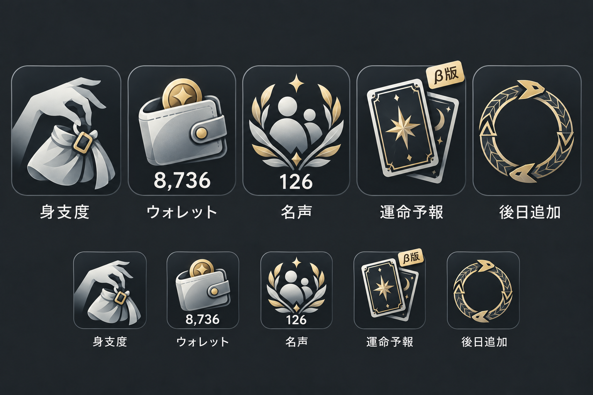

携帯端末 — アプリアイコン清書v01
銀白・灰・金の透過PNG初稿。右端のウロボロスは「塗り合わせ案」と「原作者修正版」を切り替えられます。原作者修正版のファイルは変更していません。
身支度
透過PNGを保存ウォレット
透過PNGを保存名声
透過PNGを保存
運命予報
カード本体の透過PNGを保存シールは独立レイヤー

ウロボロス — 塗り合わせ案
表示中の透過PNGを保存元の採用PNGは保持
下段は32px・48px・64px。文字・残金・名声値・アプリ下地はPNGには含めていません。β版シールの表示は重ね方の確認だけで、本体素材とは独立しています。
元の採用見本と比較する

β版シールの設定を確認・コピー
操作内容はこのブラウザに自動保存します。別の環境へ渡すときはJSONを保存するか、下の内容をコピーしてください。カード本体のPNGにはシールを焼き込みません。